Vernon,
아는 사람만 아는 캐나다
브리티시컬럼비아주 · 오카나간 밸리
01 · 훅01-hook · 0:00–0:40
어두운 화면에 "5등급 내신" 타이포가 금 가며 시작. 밴쿠버·토론토 핀 사이로 물음표 핀이 떨어지고, 흰 플래시와 함께 이 사진이 열립니다. 사진은 천천히 줌인, 타이틀은 손글씨로 그려짐.
→ crossfade유럽 부모들이 고르는 캐나다의 휴양 도시. 한국 아이는 적게, 관리는 촘촘하게. 챕터마다 대표 순간 1컷입니다. 실제 사진·문구·폰트·색 그대로이고, 움직임은 아래 설명에 적었습니다.
1920×1080 · 15:40 · 14챕터어두운 화면에 "5등급 내신" 타이포가 금 가며 시작. 밴쿠버·토론토 핀 사이로 물음표 핀이 떨어지고, 흰 플래시와 함께 이 사진이 열립니다. 사진은 천천히 줌인, 타이틀은 손글씨로 그려짐.
→ crossfade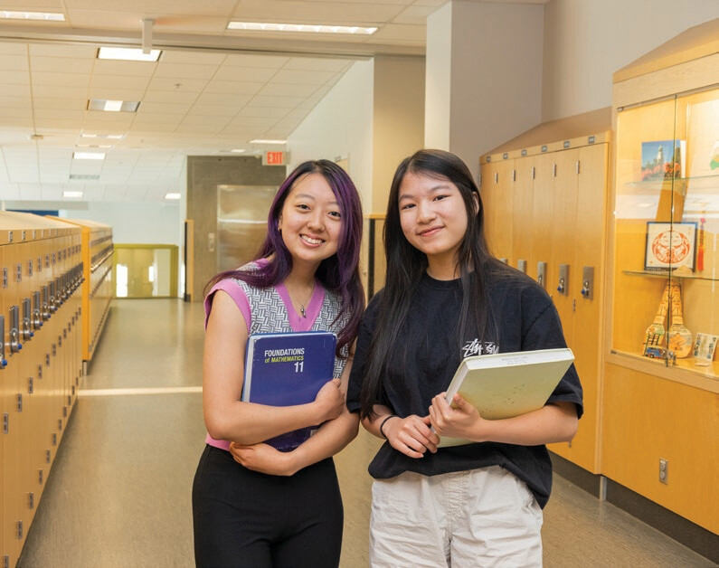
like a Canadian kid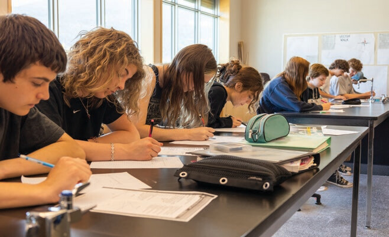
a great university두 폴라로이드가 양옆에서 기울어진 채 떨어짐. 라벨이 타이핑되고, 가운데 두 선이 하나의 화살표로 합쳐지며 "같은 방향".
→ wipe 왼쪽세 카드가 0.15초 간격으로 올라옴. 카드마다 공통 키워드가 빠져나와 아래 한 줄로 정렬되고 형광펜이 칠해짐. 마지막에 "입학보다 버티는 힘"이 도장처럼 찍힘.
→ cut (지도 줌)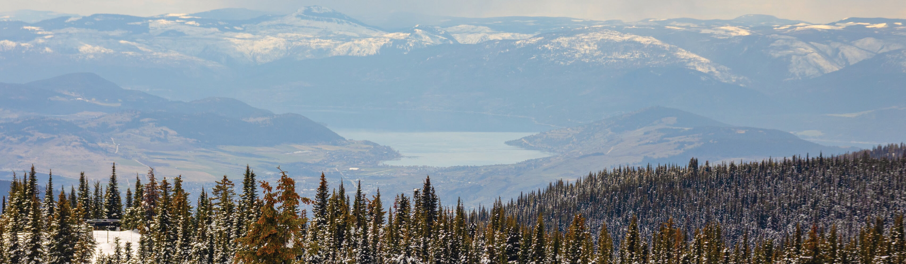
캐나다 전도 → BC → 오카나간으로 카메라 줌, 버논 핀이 튕기며 꽂힘. 파노라마가 좌→우로 흐르는 동안 정보 칩이 하나씩 튀어나옴. 이후 일러스트 지도(40)와 사계절 2×2 그리드로 이어짐.
→ wipe 왼쪽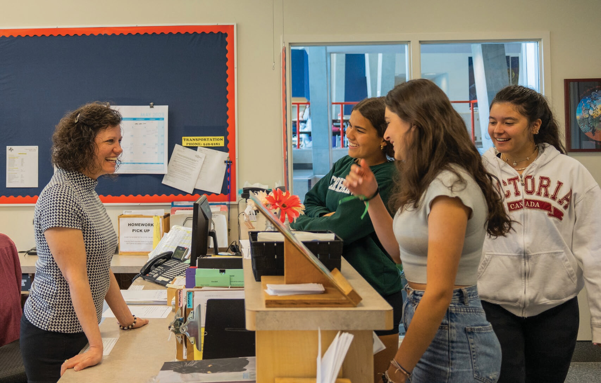
교실 사진이 천천히 줌, 왼쪽 네이비 패널이 미끄러져 들어옴. 점 100개가 물결처럼 채워지며 95% 카운트업 → 8,600 / 300 / 20 순차 카운트 → 자리 아이콘이 비었다 채워지는 루프와 자물쇠.
→ crossfade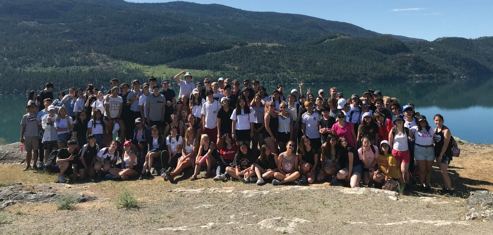
Vernon international students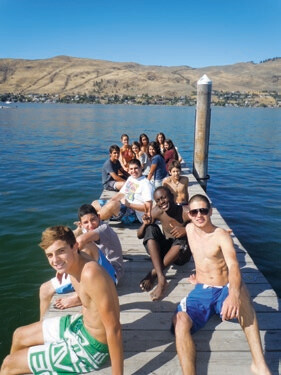
점으로 된 세계 지도 위로 유럽에서 출발한 곡선 화살표들이 차례로 그려짐. 버논 핀에 닿는 순간 핀이 맥박치고 단체 사진 카드가 펼쳐짐. 끝은 국기 든 학생 사진(04) 좌우 분할 + "같은 교실, 다른 나라 친구들".
→ wipe 왼쪽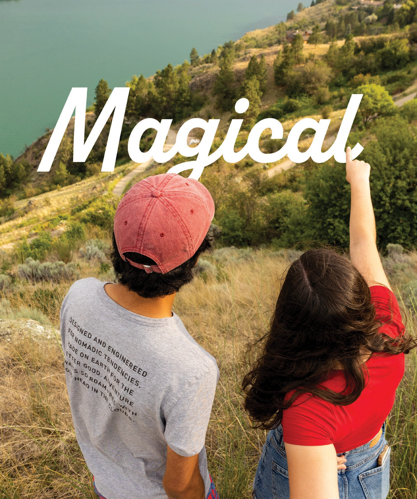
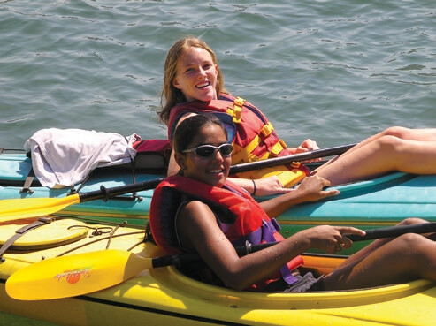
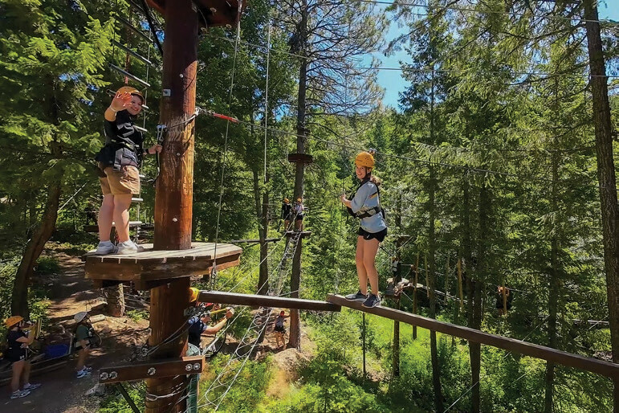
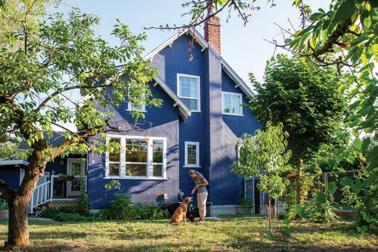
homestay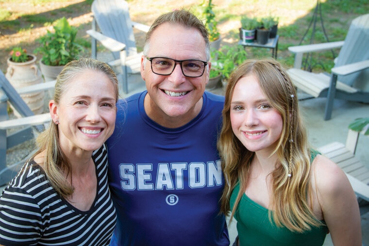
host family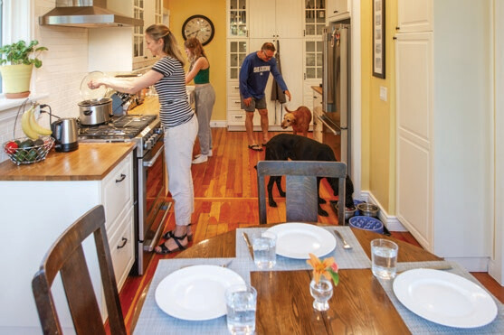
dinner세로 사진(03)이 아래에서 위로 틸트하며 시작. 리조트 이름이 아이콘과 함께 타이핑되고, 액티비티 폴라로이드가 테이블에 던져지듯 쌓인 뒤 홈스테이 3장이 가로로 정렬되며 "1인 1실 · 엄선된 가정 · 24시간 담당자" 라벨. 와이너리·골프 장면은 스톡 영상으로 보완 예정.
→ crossfade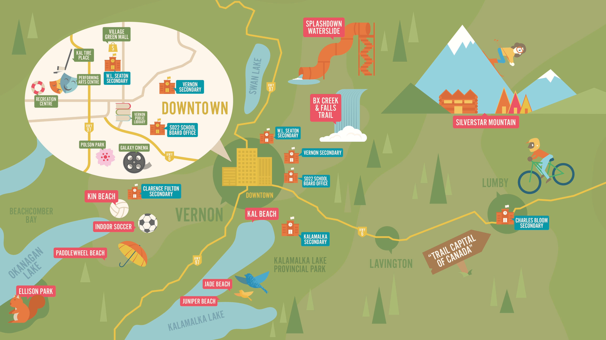
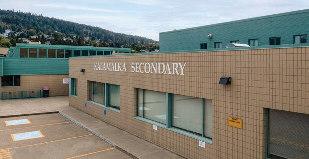
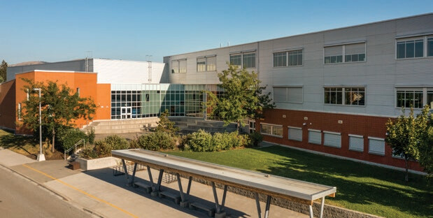
선택과목 칩이 위에서 떨어져 쌓임 → 지도 위 학교 핀 5개가 차례로 켜지고 학교 카드가 옆으로 넘어가는 캐러셀 → 아카데미 표지(41)가 문서처럼 넘어가며 아이콘 10개 그리드 → 클럽·봉사 아이콘이 '지원서'로 빨려 들어감. 기술 과목 없음.
→ cut빈 80칸 게이지에 "한국 고1 + 한국어 12학점" 블록이 한 번에 꽂히며 튕김. 학기 블록이 차례로 채워지며 40→56→72→80 카운트, 80에서 졸업모 아이콘이 튀어나옴.
→ crossfade시간표 선이 그려진 뒤 칸이 요일 순서로 채워짐. '저녁' 줄이 채워질 때 홈스테이 저녁 사진이 옆에 튀어나옴 → 체크 표시가 하나씩 그려짐 → 정착 · 가디언 케어 · 에듀 가이드 3단 계단 카드가 아래에서 쌓임(다음 비트).
→ wipe 왼쪽타임라인 선이 왼쪽에서 오른쪽으로 그려지고 마디마다 카드가 튀어나옴. 마지막 마디는 은은한 빛. 결론 문장에서 3초간 정지(held frame).
→ crossfade카드 4장이 차례로 올라오며 금액이 카운트업. 포함 항목 체크가 그려지고 하단 고지가 떠오름. 가격표 이미지는 쓰지 않음.
→ cut달력 막대가 6월부터 오른쪽으로 채워짐(오전/오후 두 줄), 끝에서 화살표가 "버논 입학" 카드로 이어짐. 학교명·일정 확인 전에는 빼고 렌더.
→ crossfade앞 장면들의 SELLING POINT 스티커 6장이 날아와 3×2로 붙으며 요약(콜백). 이어 스티커들이 위로 줄어들고 "Take Flight!" 사진이 풀스크린으로 열리며 하단 네이비 바에 상담 안내. 마지막은 사진 위 정지.
끝